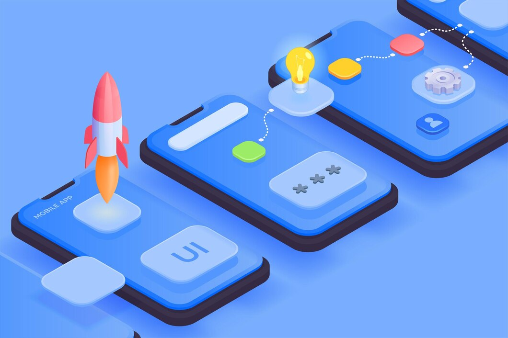

UI designer
Hello! I’m a passionate UI designer dedicated to creating intuitive and visually appealing user interfaces. With a strong foundation in design principles, I specialize in using tools like Photoshop and Figma to bring ideas to life. My goal is to craft seamless user experiences that enhance interaction and engagement. I excel in transforming complex concepts into clean, user-friendly designs, ensuring that aesthetics align with functionality. I believe that a well-designed interface not only attracts users but also guides them effortlessly through their journey. Collaboration is key in my design process. I enjoy working closely with developers and stakeholders to ensure that designs are feasible and align with project goals. I’m always eager to gather feedback and iterate on my designs to create the best possible outcomes. Staying updated with the latest design trends and tools is important to me, as I continuously strive to improve my skills. I’m excited about the opportunity to create innovative solutions that resonate with users. Let’s connect and explore how we can enhance digital experiences together!